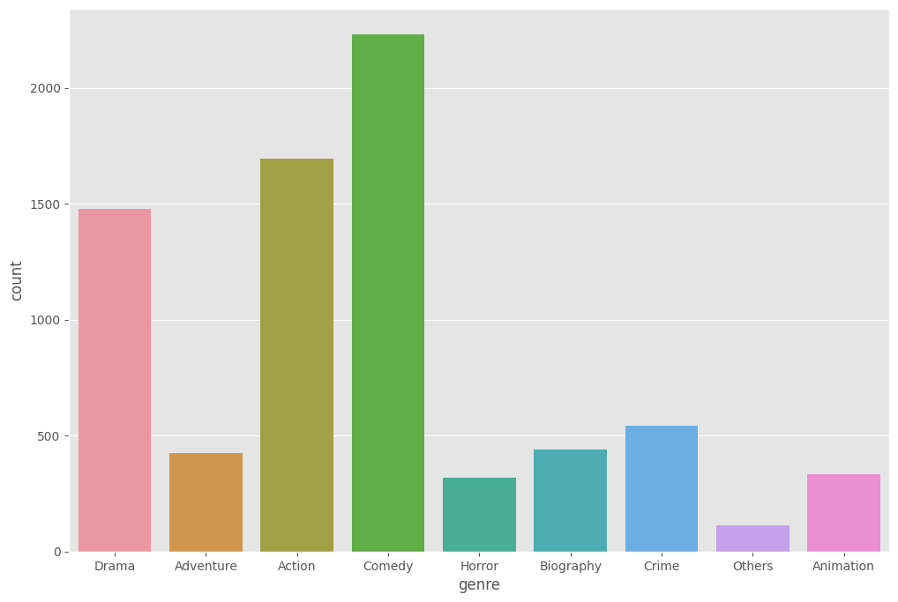

The p_value is less than 0.05; this confirms that with the confidence interval of 95%, the correlation between Budget and Gross is statistically significant.
Home
The correlations & Linear Regression Model between variables of Movie Industry (Python)
Brief about the project
The project involves fundamental data processing techniques and utilizes Python libraries to calculate correlation coefficients between variables within the film industry dataset. By performing these analyses, insights into the relationships between different factors within the dataset can be obtained. If there are any correlations between our data, I will build a model to predict the gross of the films.
About dataset
There are total of 15 attributes as follows:
1. Preparing the dataset
** Import libraries
import pandas as pd
import numpy as np
import seaborn as sns
import missingno as msno
import matplotlib.pyplot as plt
import matplotlib.mlab as mlab
import matplotlib
plt.style.use('ggplot')
from matplotlib.pyplot import figure
%matplotlib inline
matplotlib.rcParams['figure.figsize'] = (12,8)
pd.options.mode.chained_assignment = None
** Read and Overview of the dataset
path = '/Users/namhuynh/Documents/NHAT_NAM/PROJECTS/3rd_PROJECT/movies.csv'
df = pd.read_csv(path)df.info()→ The BUDGET seems to have lot of MISSING VALUE, which needs further investigation in the Data Cleaning Process.
→ BUDGET and GROSS columns have a very LARGE NUMBER, which is not readable. I will transform them in the later process.
2. Data cleaning
From the previous output, we can see that there is a lot of missing value in the Budget columns. Let’s find a way to handle this.
** Finding the missing values

# NULL count
df.isnull().sum()# NULL percent
for col in df.columns:
percent_missing = np.mean(df[col].isnull())
print('{} - {}%'.format(col, percent_missing*100))→ It appears that approximately 30% of the data is missing.
** Visualizing the missing data of every columns
msno.matrix(df)
plt.show()** Missing at Random or Missing not at Random ?
Upon observation, the missing Budget values seem to be randomly distributed across the column. Now, our next step is to investigate whether this missingness is characterized as Missing at Random (MAR) or Missing not at Random (MNAR).
*** I will isolate the missing and the completed values aside.
missing = df[df['budget'].isna()]
complete = df[~df['budget'].isna()]# Overview of the Complete DataFrame
complete.describe()# Overview of the Missing DataFrame
missing.describe()→ Upon reviewing both DataFrames, a significant disparity in the average Gross values is apparent, with an an approximate 10 time difference between the two. Based on this observation, I hypothesize that there is a tendency for MORE MISSING BUDGET VALUES WHEN THE GROSS IS LOW.
Let's sort our DataFrame by Gross and plot the distribution of missing values once again.
sorted_gross = df.sort_values(by = 'gross')
msno.matrix(sorted_gross)
plt.show()By sorting the values from smallest to largest gross, we can observe that the missing values are predominantly located at the top of the dataset. This observation strongly supports our initial hypothesis, indicating that budgets tend to be missing when the gross values are low.
→ Based on this analysis, we can confidently conclude that THE MISSING BUDGET VALUES ARE MISSING AT RANDOM (MAR).
** Data Imputation using k-nearest neighbor algorithm
Given that we have approximately 30% missing values in the Budget column, I will proceed with imputing these missing values using the k-nearest neighbor (KNN) algorithm.
The KNN algorithm replaces the missing values by predicting them based on the mean value of the n_neighbors nearest neighbors found in the training set. This approach allows us to estimate the missing Budget values and ensure that the dataset remains complete for further analysis.
*** Impute the missing value with KNN
# Import library
from sklearn.impute import KNNImputer
# Create df_imputed
df_imputed = df.copy()
# Using n_neighbors = 10
knn_imp = KNNImputer(n_neighbors = 10)
# Fit the KNNImputer to our dataset
df_imputed[['budget','gross']] = knn_imp.fit_transform(df[['budget','gross']])msno.matrix(df_imputed)
plt.show()*** Drop the remained missing values
df_cleaned= df_imputed.dropna()*** Looking for impossible values (negative Budget and Gross)
df_cleaned[df_cleaned['gross'] < 0]
df_cleaned[df_cleaned['budget'] < 0]3. Data Transformation
As mentioned during the overview of our dataset, both the Budget and Gross columns are currently of the 'float64' data type, which includes decimal points (e.g., the presence of .0 in each value). In order to remove these decimal points and enhance readability, I propose converting these columns to the 'int' data type. This conversion will effectively eliminate the .0 from the values, resulting in cleaner and more concise representations of the numerical data.
** Convert datatype
# Convert Budget and Gross from float64 to int
df_cleaned['budget'] = df_cleaned['budget'].astype('int')
df_cleaned['gross'] = df_cleaned['gross'].astype ('int')** Reduce the number of Budget and Gross for more readable
# Create the new columns
df_cleaned['gross_in_mill'] = df_cleaned['gross']/1000000
df_cleaned['budget_in_mill'] = df_cleaned['budget']/1000000
# Drop the old columns
df_cleaned = df_cleaned.drop(columns = 'budget')
df_cleaned = df_cleaned.drop(columns = 'gross')** The percentage of the country of origin in our dataset

df_country = df_cleaned.groupby(['country']).size().sort_values(ascending = False)
print(pd.DataFrame({'Percentage': df_country/len(df_cleaned)*100}))→ We have almost 80% of movies from the US in this dataset.
** Merge any Country that have less that 100 movies into others
n = 100
counts = df_cleaned['country'].value_counts()
others = set(counts[counts < n ].index)
df_cleaned['country'] = df_cleaned['country'].replace(list(others),'Others')
# Visualize the transformed country columns
sns.countplot(data=df_cleaned, x = 'country')** Merge any Genre that have less that 100 movies into others
n = 100
counts = df_cleaned['genre'].value_counts()
others = set(counts[counts < n ].index)
df_cleaned['genre'] = df_cleaned['genre'].replace(list(others),'Others')
#Visualize the transformed Genre columns
sns.countplot(data=df_cleaned, x = 'genre')

4. Data Exploration
The first thing that I would like to explore is which genre has the highest average budget and gross.
** The average budget of each genre
df_cleaned.groupby('genre')['budget_in_mill'].mean().plot(
kind = 'barh', xlabel = 'Genre', title = 'Average Budget of Genre in Millions')** The average gross of each genre
df_cleaned.groupby('genre')['gross_in_mill'].mean().plot(
kind = 'barh', xlabel = 'Genre', title = 'Average Gross of Genre in Millions')** Which Genre has the highest Return on Investment Rate?
Return on Investment (ROI) is a performance measure used to evaluate the efficiency of an investment. A high ROI means the investment’s gains compare favorably to its cost.
# Calculate the Net Profit of each genre (the outcome of Total Revenue - Total Cost)
net_profit = df_cleaned.groupby('genre')['gross_in_mill'].mean() - df_cleaned.groupby('genre')['budget_in_mill'].mean()
# Find the ROI by dividing Net Profit with the Total Cost, then mutiply by 100 to get the result in percentage
ROI = (net_profit / df_cleaned.groupby('genre')['budget_in_mill'].mean()) * 100
# Visualize the ROI by genre
ROI.plot(kind = 'barh', xlabel = 'Genre', title = 'ROI of each Genre (%)')→ In a surprising turn of events, the genre with the highest Return on Investment (ROI) is Horror, boasting an impressive ROI of approximately 270%. On the other hand, Crime has the lowest ROI, standing at around 100%. These findings shed light on the varying levels of financial success within different genres and provide valuable insights into the profitability of specific film categories.
** Correlation between each numeric features
Correlation refers to the statistical relationship between two variables. It indicates how strongly two variables linearly move in relation to one another. Notably, there are several methods that can be used to find a correlation. For this project, I will use the Pearson Correlation method.
Pearson Correlation formula is as follow:
The Pearson Correlation will return the ‘r’, a value between -1 and +1. A -1 means there is a strong negative relation, and +1 means there is a strong positive relation (the more it’s closer to -1/+1, the stronger the relationship is).
*** My hypothesis is that Budget and Gross are correlated. Let’s plot the graph to see the trend first.
plt.scatter(x = df_cleaned['budget_in_mill'], y = df_cleaned['gross_in_mill'], alpha = 0.3)
plt.title('Budget vs Gross Earnings')
plt.xlabel('Budget for Film (Millions USD)')
plt.ylabel('Gross Earnings (Millions USD)')
plt.show()*** They both seem to be correlated; let’s add the regression line to see the trend better.
sns.regplot(x = 'budget_in_mill', y = 'gross_in_mill', data = df_cleaned, scatter_kws = {'color': 'red', 'alpha':0.3}, line_kws = {'color':'blue'})
plt.title('Budget vs Gross Earnings with Regression Line')
plt.ylabel('Gross Earnings (in Millions USD)')
plt.xlabel('Budget for Film (in Millions USD)')*** To confirm my hypothesis, let’s use Corr() function to see how much there are correlated and visualize it in the heatmap.
numeric_columns = df_cleaned.select_dtypes(include=[np.number])
correlation_matrix = numeric_columns.corr()
sns.heatmap(correlation_matrix, annot= True, cmap = 'Blues')
plt.title('Correlation between Numeric Variables')
plt.xlabel('Variables')
plt.ylabel('Variables')
plt.show()This heatmap has confirmed that my hypothesis about the correlation between Budget and Gross is correct. They both have an r-value of 0.76, which means they are strongly positively correlated.
Interestingly, Votes also have a high correlation with Gross. This is indeed a new insight that we should be aware of.
*** Let’s check whether the high positive correlation
Gross and Votes
# Import Library
from scipy.stats import linregress
# Calculate P-Value of Budget vs Gross
slope, intercept, r_value, p_value, std_err = linregress(df_cleaned['budget_in_mill'], df_cleaned['gross_in_mill'])
# Print p_value
print('Slope: {}\nIntercept: {}\nr_value: {}\np_value: {}\nstd_err: {}\n'.format(slope,intercept,r_value,p_value,std_err))Votes — Gross
# Calculate p_value of Votes vs Gross
slope, intercept, r_value, p_value, std_err = linregress(df_cleaned['votes'], df_cleaned['gross_in_mill'])
# Print p_value
print('Slope: {}\nIntercept: {}\nr_value: {}\np_value: {}\nstd_err: {}\n'.format(slope,intercept,r_value,p_value,std_err))
The p_value for Votes and Gross is also less than 0.05; they are statistically significant to each other.
5. Create Linear Regression Models
To begin with, I will build a simple linear regression model first. Simple linear regression is a linear regression model with a single explanatory variable. The point of this model is to find a linear function that predicts the dependent variable values as accurately as possible.
The formula of Simple Linear Regression is as follow:
** First, let’s assign the value of each variables to x and y
x = df_cleaned[['budget_in_mill']].values
y = df_cleaned[['gross_in_mill']].values** Then split the data into train and test dataset
#import the library
from sklearn.model_selection import train_test_split
# Split the data into train and test dataset with test size of 20%
x_train,x_test,y_train,y_test = train_test_split(x,y,test_size = 0.2, random_state= 42)** Fit the train dataset to our model
#Import the library
from sklearn.linear_model import LinearRegression
#Fitting Simple Linear regression data model to train data set
mymodel = LinearRegression()
mymodel.fit(x_train,y_train)** Our model has been trained, now let’s use our trained model to predict the Gross
#Use trained model to predict the Gross in test dataset
y_pred_test_data = mymodel.predict(x_test)
#Visualising the Training set results in scatter plot
plt.scatter(x_train, y_train, color = 'red', alpha = 0.5)
plt.plot(x_train, mymodel.predict(x_train), color = 'blue')
plt.title('Budget vs Gross (Training set)')
plt.xlabel('Budget in Million USD')
plt.ylabel('Gross in Million USD')
plt.show()** Our trained model seem to do pretty well with the train dataset, now let’s visualize the the test dataset
# Visualizing the test set in a scatter plot
plt.scatter(x_test, y_test, color = 'red')
plt.plot(x_train, mymodel.predict(x_train), color = 'blue')
plt.title('Budget vs Gross (Test set)')
plt.xlabel('Budget in Million USD')
plt.ylabel('Gross in Million USD')
plt.show()The model also seems to work well with the test dataset.
** Let’s evaluation our model
#Evaluate the model
evaluate = pd.DataFrame({'Actual': y_test.flatten(), 'Predicted': y_pred_test_data.flatten()})
#Plot the evaluation
evaluate.head(10).plot(kind = 'bar')
plt.title('Evaluation Budget vs Gross (Simple Linear Regression Model)')** What score our model got ?
# Find R-squared of the model
mymodel.score(x_test,y_test)Our initial model got 58.49% accuracy, which is fine, but we can do it better.
** Multiple Regression Model
To improve our model, we need to add more independent variables to the model. Which now we have to change the model from Simple Linear Regression Model to Multiple Regression instead.
The multiple linear regression attempts to model the relationship between explanatory variables and a response variable (similar with Simple Linear Regression but with more explanatory variables).
The formula for Multiple Linear Regression is as follow:
*** In this case, we will add Votes variable into our model
# Insert votes to increase the performance of the model
x = df_cleaned[['budget', 'votes']]
y = df_cleaned[['gross']]*** Then split the data into train and test dataset
# Splitting the dataset into train and test sets
x_train, x_test, y_train, y_test = train_test_split(x, y, test_size = 0.2, random_state = 42)
*** Fit the train dataset to our model
mymodel.fit(x_train, y_train)** What score our model got ?
mymodel.score(x_test, y_test)Voilà! Our score has improved almost 10%, which means 67.89% of our dependent variable can be explained using this model.
Conclusion
In this project, we have found that
Also, I have built both Simple Linear Regression and Multiple Linear Regression Model to predict gross. The later Model can perform to predict future movie gross by using two independent variables, budget and votes, with the R² score of 67.89%, which means there are still roughly 33% unknown factors that affecting the gross.
Notably, this dataset is biased toward movie industry from USA, as almost 80% of the movies in dataset are from USA. Therefore, this can be caveat for our model.
For more Projects


AIR TRANSPORT SERVICE FOR LIVE ANIMALS (3PL)